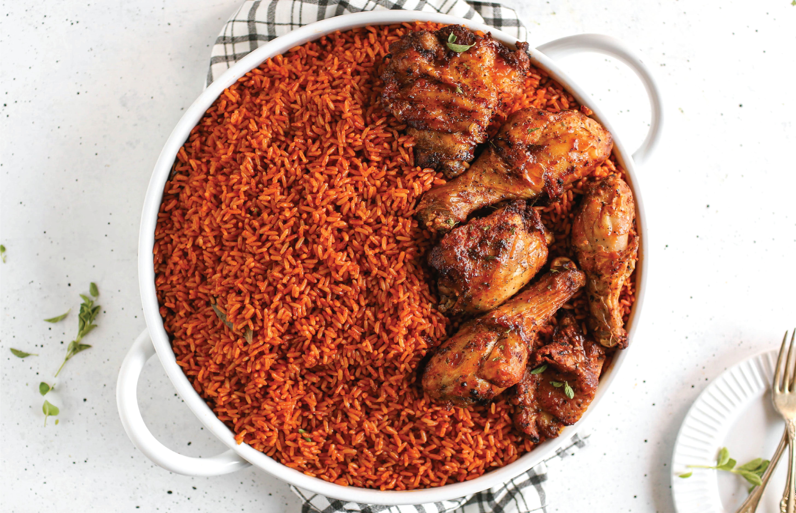
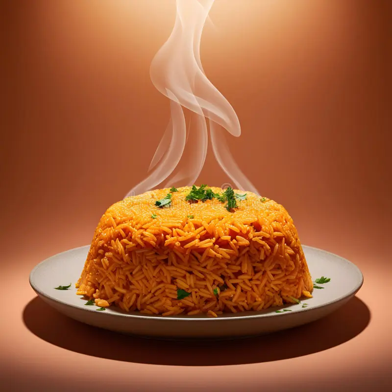

🌾Origin and History
The roots of Jollof rice❤️❤️👌 trace back to the Senegambian region, specifically the ancient Wolof (or Jolof) Empire, which is located in what is now Senegal, The Gambia, and Mauritania. Over time, the dish spread across West Africa😋😋 through trade, migration, and colonial influence, evolving as each region added its own twist🍍🥭🍊. Today, it’s a staple in countries like Nigeria, Ghana, Senegal, Liberia, Sierra Leone, and Cameroon — each with its own fiercely defended version.
🍑Ingredients and Preparation
At its core, Jollof rice is made by cooking rice in a tomato-based sauce seasoned with a blend of spices. The key ingredients typically include:
- Long-grain parboiled rice
- Tomatoes (fresh or pureed)
- Tomato paste
- Onions
- Bell peppers
- Scotch bonnet (for heat)
- Garlic and ginger
- Seasonings such as thyme, curry powder, bay leaves, and bouillon cubes
Some variations also include vegetables like peas and carrots, and proteins such as chicken, beef, shrimp, or fish. The rice is slowly simmered in the flavorful sauce until it absorbs all the rich spices and turns a deep reddish-orange.
